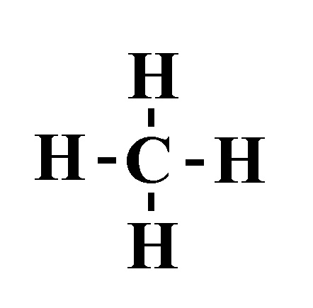
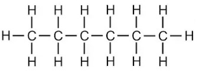

Press Ctrl-Z to toggle the answers.
In-Class Practice Problems (Ch 11 & 13)
Feb 15, 2023
name: ______________________________________
1) Which substance has the highest intermolecular forces?
A) Xe*
B) Ar
C) Kr
D) Ne
2) How much energy is required to heat 38.9 g H2O from a liquid at 69.2°C to a gas at 130°C?
ΔHvap = 40.7 kJ/mol
Cliquid = 4.184 \( \frac{J}{g°C} \)
Cgas = 2.01 \( \frac{J}{g°C} \)
Csolid = 2.09 \( \frac{J}{g°C} \)
Tmelting = 0°C
Tboiling = 100°C
A) 109 kJ
B) 1590 kJ
C) 7450 kJ
D) 95.2 kJ*
3) Choose the substance with the highest vapor pressure at a given temperature.
A) CH3OH
B) NaOH
C) SeF2
D) CO2*
4) What is the strongest type of intermolecular force present in a solution of NaCl & water?
A) Dipole-dipole forces
B) Ion-dipole forces*
C) Hydrogen bonding
D) London dispersion forces
E) None of the above.
5) Identify the place which has the lowest boiling point of water.
A) New Orleans, sea level
B) Mt. Everest, 29,035 feet*
C) Death Valley, 282 feet below sea level
D) Denver, Colorado, 5280 feet
6) Which of the following has the lowest viscosity?
A) *
B)

C)

D)

7) Determine the normal boiling point (at 760 mm Hg) of a substance whose vapor pressure is 50.7 mm Hg at 45.2°C and has a ΔHvap of 36.5 kJ/mol.
A) 396 K*
B) 266 K
C) 319 K
D) 46.5 K
8) Which of the following increases the rate of vaporization?
A) Decreasing temperature
B) Weak intermolecular bonds*
C) Strong intermolecular bonds
D) Decreasing the surface area
9) How much energy is required to vaporize 53.3 g of dichloromethane (CH2Cl2) at its boiling point, if its ΔHvap is 28.06 kJ/mol?
A) 161 kJ/mol
B) 17.6 kJ/mol*
C) 1500 (3 sf) kJ/mol
D) 0.628 kJ/mol
10) What is the main reason why the boiling point of HF is much higher than that of HCl?
A) HF has dipole-dipole forces whereas HCl does not
B) HF has stronger London dispersion forces than HCl
C) HF can hydrogen bond whereas HCl cannot*
D) HCl can hydrogen bond whereas HF cannot
11) Place the following substances in order of increasing vapor pressure at a given temperature.
SF6 SiH4 SF4
A) SF4 < SF6 < SiH4
B) SF6 < SF4 < SiH4
C) SiH4 < SF4 < SF6*
D) SF6 < SiH4 < SF4
12) Choose the substance with the lowest ΔHvap.
A) SiS2*
B) MgCl
C) H2S
D) H2O
13) Which of the following statements is TRUE?
A) Hydrogen bonding is generally stronger than covalent bonds
B) Particles move to a lower potential energy when they form bonds*
C) Increasing the temperature of a liquid generally causes it to become a solid
D) Breaking bonds releases energy
14) Using the phase diagram below, what phase transition would occur if H
2O was heated from 4.6°C to 400 (2 sf)°C at 50 atm?

A) Melting
B) Condensation
C) Vaporization (boiling)*
D) Sublimation
15) (SLO 1.2) In bromine Br2, which intermolecular forces are present?
A) London dispersion and hydrogen bonding
B) London dispersion and dipole-dipole
C) Only London dispersion*
D) Only dipole-dipole and ion-dipole forces are present
16) (SLO 1.5) List the compounds below in decreasing boiling point order.
CH3CH2CH2CH3 He CH3CH2CH2OH
A) CH3CH2CH2CH3 > He > CH3CH2CH2OH
B) CH3CH2CH2CH3 > CH3CH2CH2OH > He
C) CH3CH2CH2OH > CH3CH2CH2CH3 > He*
D) He > CH3CH2CH2OH > CH3CH2CH2CH3
17) What is the major intermolecular force between NaCl and H2O?
A) Hydrogen bonding
B) London dispersion forces
C) Ion-dipole forces*
D) Dipole-dipole forces
18) Which of the following compounds will be most soluble in methanol (CH3OH)?
A) Ethandiol
 *
*B) Hexane
C) Trimethylamine

D) Acetone

E) None of the above.
19) A sealed container contains 0.786 L of water with an atmosphere of oxygen gas. What is the concentration of O2 in the water if the external pressure is 3.25 atm given that kH for O2 is 1.66 × 10-6 M/mm Hg at this temperature?
A) 7.10x10-9 M
B) 5.39x10-6 M
C) 2580 M
D) 0.0041 M*
20) Calculate the mass of oxygen (in mg) dissolved in a 5.00 L bucket of water exposed to a pressure of 1.14 atm of air. Assume the mole fraction of oxygen in air to be 0.21 given that kH for O2 is 1.3 × 10-3 M/ atm at this temperature.
A) 0.00741 mg
B) 23.7 mg
C) 119 mg*
D) 0.12 mg
21) Determine the vapor pressure of a solution at 25°C that contains 86.2 g of glucose (C6H12O6) (180.2 g/mol) in 200 mL of water (18.02 g/mol). The vapor pressure of pure water at 25°C is 23.8 torr, and the density of water is 1.00 g/mL.
A) 22.8 torr*
B) 0.983 torr
C) 552 torr
D) 1.03 torr
22) What is the mol fraction of ethanol, C2H5OH (46.07 g/mol), in a solution of 71.6 g of ethanol and 800 g of water (18.02 g/mol)?
A) 0.966
B) 28.6
C) 0.0338*
D) 0.035
23) Determine the Henry's law constant for an unknown gas in water at 25°C if the unknown gas at a pressure of 0.0409 atm produces a solution with a concentration of 3.75 M.
A) 0.153 M/atm
B) 91.7 M/atm*
C) 3.83 M/atm
D) 0.0109 M/atm
24) Which of the following have a great impact on the solubility of a gas in a liquid?
A) Temperature and pressure*
B) Temperature only
C) Pressure only
D) None of the above.
25) How many moles of NaI are contained in 331 g of water in a 0.258 m NaI solution?
A) 0.0854 mol*
B) 12.8 mol
C) 0.89 mol
D) 85.4 mol
26) What mass (in g) of NH3 (17.03 g/mol) must be dissolved in 500. g of methanol (32.04 g/mol) to make a 0.258 m solution?
A) 0.0684 g
B) 4.13 g
C) 0.129 g
D) 2.19 g*
27) A 2.44 L sample of a water solution contains 0.107 g of sodium ions. Determine the concentration of sodium ions in ppm is the density of the solution is 1.00 g/mL.
A) 43.9 ppm*
B) 48.7 ppm
C) 0.0000439 ppm
D) 4.39x104 ppm
28) Which of the following would result in an endothermic reaction?
A) The reactants have stronger bonds than the products*
B) The reactants are at a higher potential energy than the products
C) The reactants have weaker bonds than the products
D) The products and reactants have equal strength bonds
29) (SLO) The osmotic pressure of a solution formed by dissolving 33.6 mg of Aspirin (C9H8O4) (180.16 g/mol) in enough water to make 0.207 L of solution at 20°C is _____ atm.
A) 0.00449
B) 21.7
C) 0.00148
D) 0.0217*
30) (SLO) What is the change in boiling point of a solution of 32.5 g KCl (74.55 g/mol) in 774 g of water? Kb for water is 0.512°C/m. Assume ideal behavior.
A) 0.288°C
B) 0.577°C*
C) 0.000288°C
D) 21.5°C
31) (SLO) The Henry’s law constant for hydrogen gas in water at 20ºC is 8.1 x 10-4 M/atm. When the partial pressure of helium above a sample of water is 0.744 atm, the concentration of helium in the water is ______ M.
A) 6.03x104*
B) 9.19x10-6
C) 6.03
D) 1.09x105
32) (SLO) A solution is 0.649 m MgCl2 (95.21 g/mol). What is the molarity of the solution if the density is 1.02 g/mL?
A) 0.623 M*
B) 0.0105 M
C) 0.662 M
D) 0.611 M
33) (SLO) What is a solution containing less than the equilibrium amount of solute is called?
A) A concentrated solution
B) An unsaturated solution*
C) A supersaturated solution
D) A saturated solution
E) None of the above.